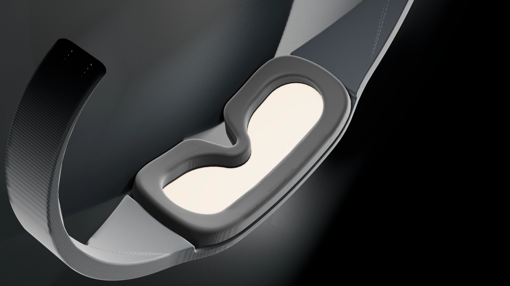

DeltaLabs. Sleep, reimagined.
MORE THAN A SLEEP MASK
Your night.
Working together.
Brain-signal sensing. Built-in sound. A personal sunrise.
One mask, designed around the way you sleep.

SMART NAPS. SMARTER MORNINGS.
Go beyond
guesswork.
Sleep-stage sensing and a planned smart wake window. For a quick reset or a full night.
EEG VISUALIZATION · SMART WAKE IN DEVELOPMENT
A GENTLER START
Your own
first light.
A gradual wake light and integrated sound, designed to bring a sunrise to your morning routine.

NEW TIME ZONE. SAME BODY CLOCK.
Travel with
your rhythm.
Understand light timing and jet lag. Planned app guidance brings the science closer to your routine.

THE NEXT CHAPTER
Better nights.
Within reach.
$99 target. No subscription planned.
FOLLOW THE LAUNCH ↗PROTOTYPE STAGE · LAUNCH DATE TO BE ANNOUNCED
Product and material visualizations. Features, pricing, sensing accuracy, and sleep benefits remain in development and require validation. Not a diagnostic or treatment device.